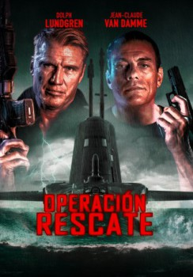

Black Water (2018)


Some secrets never surface

País:Canadá, 104 minutos.
Idiomas:Inglés
GénerosAcción, Drama, Suspenso
Director/es:Pasha Patriki
Guionistas:Chad Law, Tyler W. Konney, Richard Switzer
Códec de vídeo:Unknown
Número: 986
TomatoMeter:

--

--
Clasificación IMDb:


4.7/10 (7.7K votos)
Certificación:
Argumento:
Un agente encubierto se despierta y se encuentra encerrado en un lugar secreto de la CIA en un submarino.
Reparto
Jean-Claude Van Damme (Como Wheeler), Dolph Lundgren (Como Marco), Al Sapienza (Como Rhodes), Courtney Blythe Turk (Como Mel (Como Courtney B Turk)), Jasmine Waltz (Como Cass)
Medio: Archivo de video,
Localización: D:\PELICULAS\COMANDO BELICAS\Seals Operación Rescate [2023]\Seals Operación Rescate [2023].mp4
Prestado: No
Rel. aspecto: Unknown